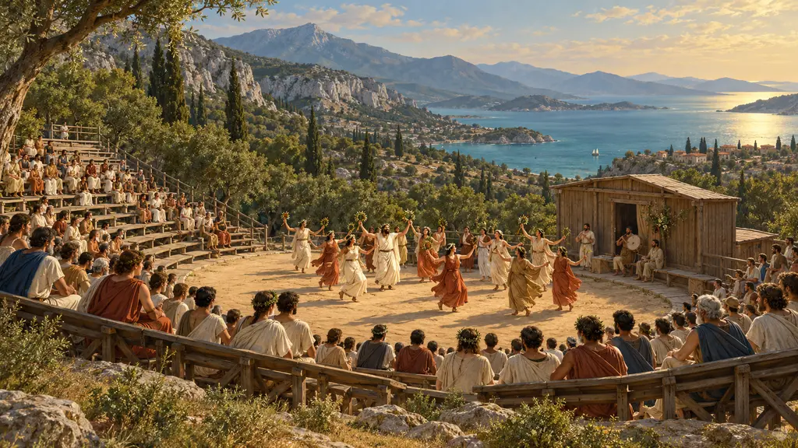
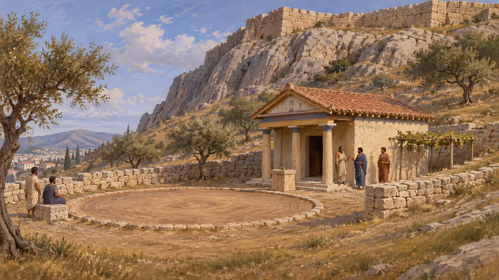
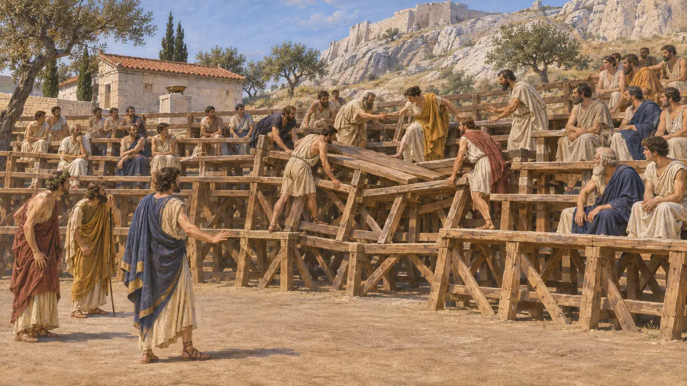
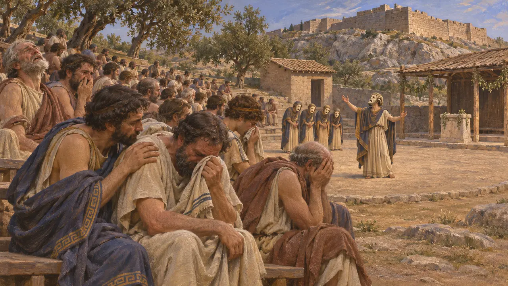
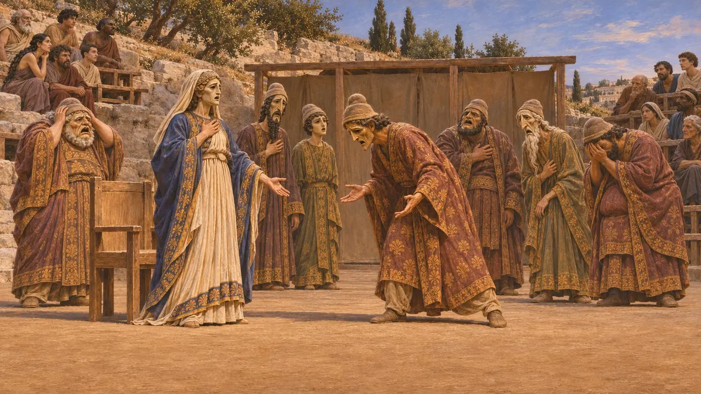
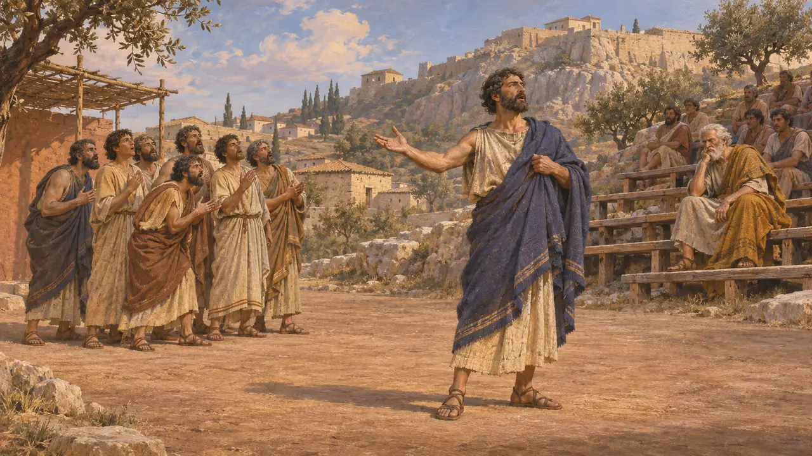

Théâtre de Dionysos
Théâtre en plein air sur le versant sud de l'Acropole, Athènes, VIe-Ve siècle av. J.-C.
Le Théâtre de Dionysos se trouvait sur le versant sud de l'Acropole, où les Athéniens assistaient aux tragédies lors des Grandes Dionysies, la fête printanière du dieu. À l'époque des guerres médiques, ce n'était sans doute encore qu'une simple aire de danse avec des gradins de bois. La tragédie athénienne de ces décennies fit de la chute de Milet et de la défaite de Xerxès une mémoire publique partagée.
Dans le jeu : Le jeu le propose dans les villes grecques comme bâtiment de service à gradins de bois, et Hérodote (6.21) rapporte bien qu'Athènes pleura devant la pièce de Phrynichos. Rares étaient les cités grecques dotées d'un théâtre à une date aussi haute ; Athènes en est le cas évident, le jeu généralise donc.

Le sanctuaire du versant sud
Dans les sourcesLe théâtre se trouvait à l'intérieur du sanctuaire de Dionysos Éleuthéreus, où les fouilleurs ont mis au jour les fondations d'un petit temple du VIe siècle. Les vestiges antérieurs à 480 av. J.-C. sont maigres. Ils comprennent quelques murs anciens et des traces qui pourraient appartenir à une aire de danse circulaire, l'orchestra. Les gradins de pierre visibles aujourd'hui datent pour l'essentiel d'une reconstruction menée vers 330 sous Lycurgue, avec des remaniements romains ultérieurs.
A. Pickard-Cambridge, The Theatre of Dionysus in Athens, 1946

Bancs de bois et lieux où l'on voyait les pièces
ContestéDes lexicographes grecs tardifs rapportent que les premiers spectateurs s'asseyaient sur des gradins de bois appelés ikria. La Souda raconte que ces gradins s'effondrèrent vers 500 av. J.-C., lors d'un concours où Pratinas affrontait Eschyle, après quoi les Athéniens bâtirent un théâtre. Certains historiens pensent que les premières pièces étaient jouées sur l'Agora et ne furent transférées sur la pente qu'à ce moment-là. D'autres les situent au sanctuaire dès l'origine, et la datation des plus anciens vestiges reste débattue.
Suda, s.v. Pratinas; E. Csapo and W. Slater, The Context of Ancient Drama, 1995

Phrynichos et la Prise de Milet
Récit antiqueHérodote rapporte que Phrynichos fit représenter une tragédie, La Prise de Milet, après que les Perses eurent pris la ville en 494 av. J.-C., et que tout le public fondit en larmes. Les Athéniens lui infligèrent une amende de mille drachmes pour leur avoir rappelé leurs propres malheurs et interdirent que la pièce fût jamais rejouée. Hérodote ne donne pas de date, et les historiens la situent généralement vers 493 av. J.-C. Athènes avait envoyé vingt navires pour soutenir la révolte de l'Ionie avant de les rappeler, ce qui explique peut-être pourquoi la pièce piqua au vif.
Herodotus 6.21; Herodotus 5.97; Herodotus 5.103

Les guerres médiques sur la scène
Récit antiquePlutarque rapporte que Thémistocle finança en 476 av. J.-C. un chœur victorieux de Phrynichos. Les historiens modernes identifient souvent la pièce aux Phéniciennes, un drame consacré à Salamine. Eschyle, qui avait combattu à Marathon, fit jouer Les Perses en 472 av. J.-C. : l'action se déroule à la cour perse, au moment où la nouvelle de la défaite de Xerxès parvient à la reine mère. C'est une Perse imaginée par un Grec plutôt qu'une source perse, et c'est la plus ancienne tragédie grecque conservée.
Plutarch, Themistocles 5; Aeschylus, Persians

Thespis et la première tragédie
Légende tardiveLes Grecs postérieurs racontaient que la tragédie naquit lorsque Thespis se détacha du chœur et parla pour la première fois en tant que personnage. Une chronique gravée au IIIe siècle, le Marbre de Paros, place sa première représentation à Athènes dans les années 530 av. J.-C. Plutarque rapporte un conte moral où le vieux Solon, assistant à une représentation de Thespis, lui reprocha de mentir en public. Ces récits furent consignés des siècles plus tard et sont invérifiables.
Plutarch, Solon 29; Marmor Parium
Sources
- Herodotus 6.21
- A. Pickard-Cambridge, The Theatre of Dionysus in Athens, 1946
- A. Pickard-Cambridge, The Dramatic Festivals of Athens, 2nd ed., 1968
- E. Csapo and W. Slater, The Context of Ancient Drama, 1995
- Aeschylus, Persians
- Plutarch, Themistocles 5